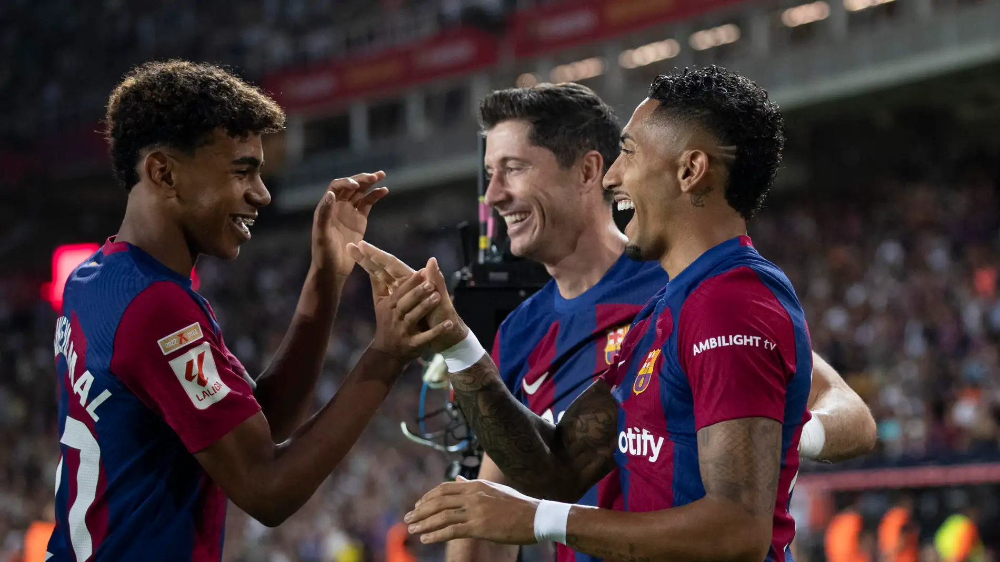

RLY, o trio de ataque que está voando.
O trio de ataque teve uma melhora absurda com a chegada do novo treinador Hans Flick. Com ele no comando, o trio já somou impressionates 66 participações a gol, sendo 50 delas na Liga Espanhola e 16 na Champions League. Com essas atuações, o Barcelona, é o primeiro colocado de La Liga e está no 3º lugar da Champions.
Além do desempenho ofensivo, o trio RLY tem mostrado uma sintonia impressionante dentro de campo. A química entre os jogadores é evidente, com trocas rápidas de passes, movimentação inteligente e um entendimento quase telepático nas jogadas decisivas. Essa conexão não só tem sido fundamental para os resultados do Barcelona, mas também vem encantando torcedores e críticos, que consideram o trio um dos melhores da atualidade no futebol europeu.
Outro ponto que merece destaque é a versatilidade do trio, que consegue se adaptar a diferentes estilos de jogo e adversários. Seja enfrentando defesas compactas ou explorando os contra-ataques, os três atacantes têm demonstrado uma habilidade única de decidir partidas em momentos cruciais. Sob o comando de Hans Flick, cada jogador parece ter encontrado seu papel ideal, potencializando o desempenho coletivo e reforçando o status do Barcelona como um dos times mais temidos da temporada.
Raphinha, números e estátisticas!.
Números em La Liga:
- 11 gols
- 6 assistências
- 17 (G/A)
Números em Champions:
- 5 gols
- 2 assistências
- 7 (G/A)
Números da temporada:
- 16 gols
- 8 assistências
- 24 (G/A)
O Adm crava, bola de ouro 2025!
Lewandowski, números e estátisticas!.
Números em La Liga:
- 16 gols
- 2 assistências
- 18 (G/A)
Números em Champions:
- 7 gols
- 0 assistências
- 7 (G/A)
Números da temporada:
- 23 gols
- 2 assistências
- 25 (G/A)
Lamine Yamal, números e estátisticas!.
Números em La Liga:
- 5 gols
- 9 assistências
- 14 (G/A)
Números em Champions:
- 1 gols
- 1 assistências
- 2 (G/A)
Números da temporada:
- 6 gols
- 10 assistências
- 15 (G/A)